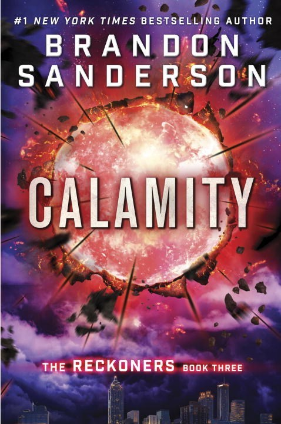

"Calamity"
- Read on 2018-11-21
- Rating: ️️️️️
- Format: 🎧 (12 hours 18 minutes)
I listened to this series for the first time (having read it originally). It's a fun series, with enough humor, twists & turns, and superpowers to keep you engaged. This time through, this third book in particular felt like it both dragged a bit in places, then unexpectedly went at light speed. Regardless, they're fun books, and I'll likely reread (or re-listen to) them when another of my children chooses to read them for the first time.